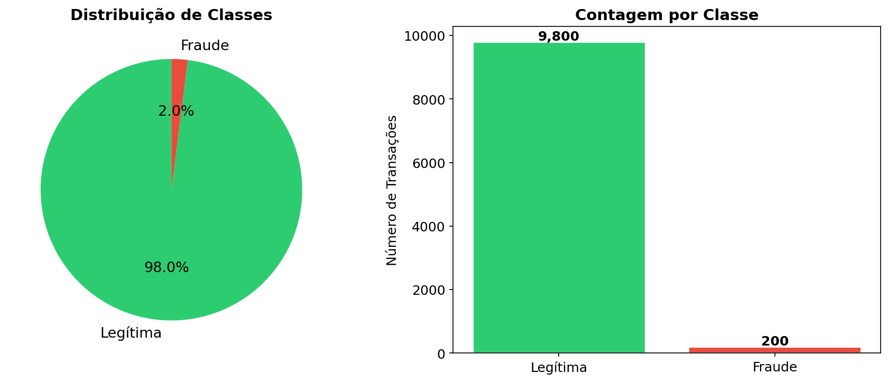
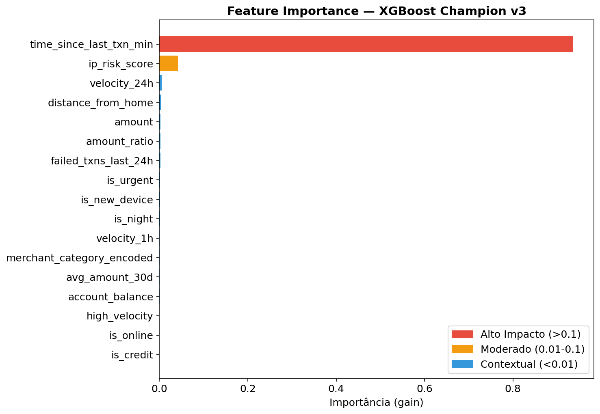
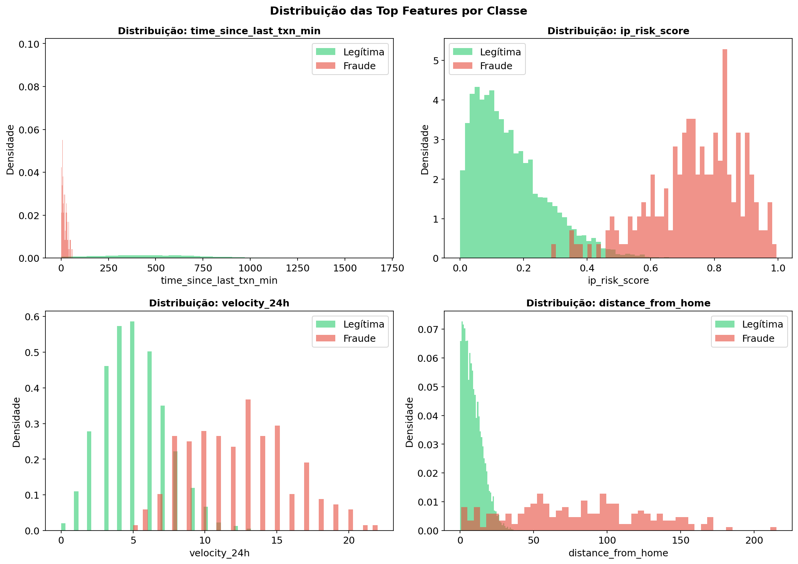
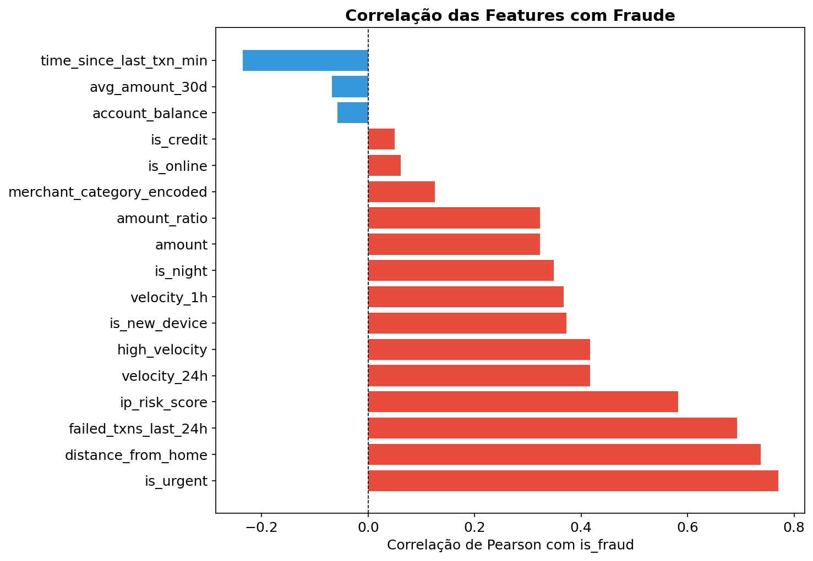
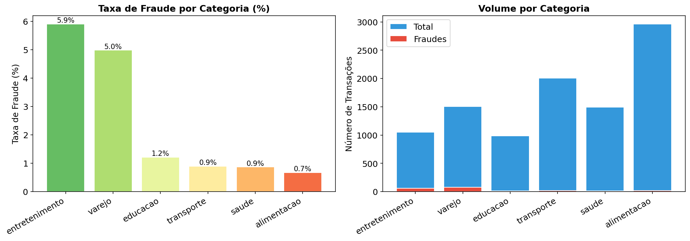
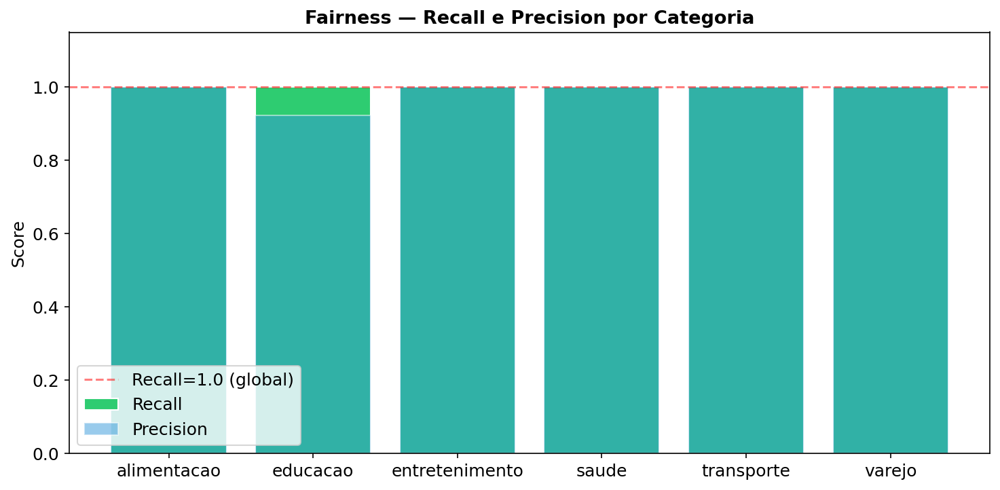

Autora: Maria L F de Araujo — Turma 6MLET, FIAP/PosTech
Dataset: enriched-v2 — 10,000 transações sintéticas | seed=42
Repositório: github.com/Mluci3/datathon-fraude

scale_pos_weight no XGBoost
e a priorização de Recall sobre Precision. O custo de uma fraude não detectada supera o custo de um falso alarme.
| Classe | Contagem | Percentual |
|---|---|---|
| Legítima | 9,800 | 98.0% |
| Fraude | 200 | 2.0% |
| Ratio | 49:1 | |

| Feature | Importância | Categoria |
|---|---|---|
| time_since_last_txn_min | 0.9367 | 🔴 Alto |
| ip_risk_score | 0.0417 | 🟡 Moderado |
| velocity_24h | 0.0055 | 🟢 Contextual |
| distance_from_home | 0.0044 | 🟢 Contextual |
| amount | 0.0026 | 🟢 Contextual |
| amount_ratio | 0.0023 | 🟢 Contextual |
| failed_txns_last_24h | 0.0019 | 🟢 Contextual |
| is_urgent | 0.0016 | 🟢 Contextual |
| is_new_device | 0.0012 | 🟢 Contextual |
| is_night | 0.0011 | 🟢 Contextual |
| velocity_1h | 0.0006 | 🟢 Contextual |
| merchant_category_encoded | 0.0002 | 🟢 Contextual |
| avg_amount_30d | 0.0002 | 🟢 Contextual |
| account_balance | 0.0001 | 🟢 Contextual |
| is_online | 0.0000 | 🟢 Contextual |
| high_velocity | 0.0000 | 🟢 Contextual |
| is_credit | 0.0000 | 🟢 Contextual |


device_novo=True AND tempo_acesso < 30min, padrão clássico de account takeover.
| Feature | Correlação com is_fraud |
|---|---|
| is_urgent | 0.7698 |
| distance_from_home | 0.7369 |
| failed_txns_last_24h | 0.6925 |
| ip_risk_score | 0.5821 |
| velocity_24h | 0.4165 |
| high_velocity | 0.4164 |
| is_new_device | 0.3720 |
| velocity_1h | 0.3667 |
| is_night | 0.3488 |
| amount | 0.3231 |
| amount_ratio | 0.3231 |
| merchant_category_encoded | 0.1257 |
| is_online | 0.0613 |
| is_credit | 0.0495 |
| account_balance | -0.0579 |
| avg_amount_30d | -0.0685 |
| time_since_last_txn_min | -0.2353 |

| Categoria | Total | Fraudes | Taxa de Fraude |
|---|---|---|---|
| entretenimento | 1,049.0 | 62 | 5.9% |
| varejo | 1,503.0 | 75 | 5.0% |
| educacao | 984.0 | 12 | 1.2% |
| transporte | 2,005.0 | 18 | 0.9% |
| saude | 1,496.0 | 13 | 0.9% |
| alimentacao | 2,963.0 | 20 | 0.7% |

| Categoria | Recall | Precision | Status |
|---|---|---|---|
| alimentacao | 1.0000 | 1.0000 | ✅ OK |
| educacao | 1.0000 | 0.9231 | ✅ OK |
| entretenimento | 1.0000 | 1.0000 | ✅ OK |
| saude | 1.0000 | 1.0000 | ✅ OK |
| transporte | 1.0000 | 1.0000 | ✅ OK |
| varejo | 1.0000 | 1.0000 | ✅ OK |
| Insight | Impacto | Decisão Tomada |
|---|---|---|
| Desbalanceamento severo (98:2) | Alto | scale_pos_weight no XGBoost |
| time_since_last_txn_min domina (93.67%) | Alto | Feature temporal como foco principal |
| is_urgent correlação 0.770 | Alto | Feature de engenharia combinada |
| ip_risk_score > 0.7 indica fraude | Médio | Regra indexada no RAG |
| Recall 1.0 em todas as categorias | Positivo | Fairness confirmada — sem viés |
| Varejo (75) e Entretenimento (62) com mais fraudes | Médio | Regras específicas no RAG |
Gerado automaticamente por notebooks/run_eda.py | Abril/2026